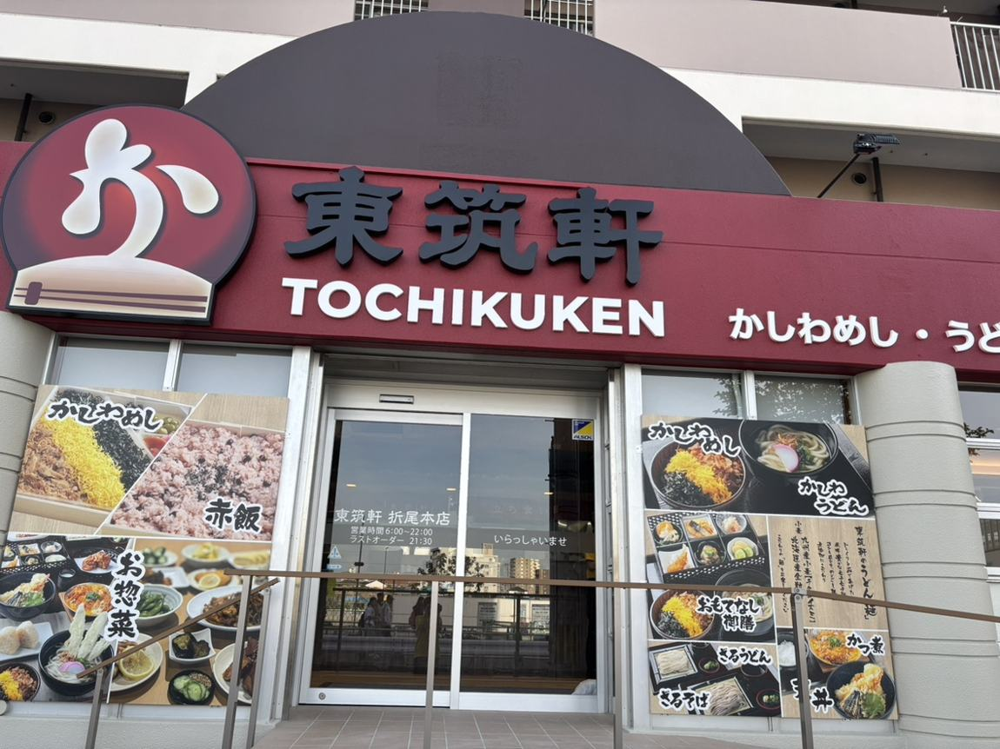

17東筑軒 折尾本店とうちくけん おりおほんてん
official
朝6時から22時まで（ラストオーダー21:30）の通し営業で、年中無休。2026年4月25日に本社1階を全面改装してオープンした新しい店で、昔ながらの立ち食いコーナーを残しつつ、座って食べられるテーブル席も設けている。入口を入って左手がテイクアウトコーナーで、弁当と冷凍うどん・そばを持ち帰れる。ここのうどんは「かしわうどん」が基本で、どの品にも甘辛く炊いた鶏肉（かしわ）が入る。ごぼ天は5cmほどに切ったごぼうを1本ずつ揚げたものが5本のるのが東筑軒の形。会社は大正10年（1921年）創業で、駅弁「かしわめし」の製造元。朝食にも夜食にも使えるが、折尾駅の改札内にある姉妹店とは営業時間が違うので注意する。
一皿:かしわうどん（甘辛い鶏肉と錦糸卵をのせた北九州の定番。410円）／ごぼ天うどん（1本ずつ揚げたごぼ天が5本。510円）／全部うどん（かしわ・ごぼ天・丸天・わかめ・月見などを全部のせ、器も大きい。790円）
| 営業時間 | 6:00〜22:00（ラストオーダー21:30）、年中無休 |
|---|---|
| 定休日 | なし（年中無休） |
| 住所 | 福岡県北九州市八幡西区堀川町4-1 |
| 予約 | うどん店の席の予約は不可（弁当はネット予約・電話予約を受け付けている） — ☎ 093-383-1818 ／ 公式サイト |
選定理由:北九州のうどんを語るときに外せない「かしわうどん」の本家で、立ち食いの作法を残したまま2026年に改装した店。朝6時開店という章の要件にも当たり、資さんうどんとは別系統の出汁・食べ方を示せる。営業の根拠＝①店自身が出した情報: 公式サイト www.tochikuken.co.jp の「お知らせ」最新が2026年11月10日付で、店舗一覧に折尾本店が現住所・電話・営業時間つきで載っている（2026-11-16 確認）。②閉店していないことの確認3通り: 「東筑軒 折尾本店 閉店」（空白あり）と「東筑軒折尾本店閉店」（詰めた形）の両方で検索し閉店情報なし（2026-11-16。検索に出た「閉店」は折尾の別店「東洋軒」のもの）、「東筑軒 折尾本店 移転」では移転ではなく同じ場所での全面改装と確認（2026-11-16）、「東筑軒 折尾本店 リニューアル」で2026年4月25日のグランドオープンと、同店に続く2号店が2026年8月8日に開いたことを確認（＝改装後も営業中。2026-11-16）。屋号は「東筑軒 折尾本店」のまま。
Googleマップで開く
写真: 公式サイト（tochikuken.co.jp）より引用 / 外観: 出典ページ / 参照元: 公式サイト 店舗一覧（折尾本店の住所・電話・営業時間・駐車場・2026年4月25日オープン）2026-11-16 取得 / 公式サイト 商品のご紹介「うどん店メニュー」（かしわうどん410円ほかの価格・ごぼ天の説明）2026-11-16 取得 / 公式サイト トップ（お知らせ2026年11月10日＝営業の根拠、本社住所、大正10年創業）2026-11-16 取得